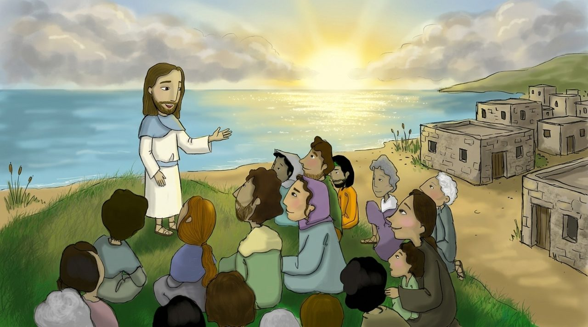

1 · Matta 4:12–17
Qaranlığa doğan işıq
Yəhya həbs olunandan sonra İsa a köçüb xidmətə başlayır. Matta Yeşaya 9:1–2-dən sitat gətirir: “Qaranlıqda oturan xalq böyük bir işıq gördü.”
“yadellilərin Qalileyası” adlanacaq qədər müxtəlif xalqların yaşadığı ucqar yer idi. İşıq əvvəlcə Yerusəlimin seçkinlərinə deyil, ucqarlara düşdü.
Dərindən baxaq · Niyə Qalileya?
Zevulun və Naftali torpağı e.ə. 8-ci əsrdə Aşşurun ilk tapdaladığı yer idi. Ən əvvəl qaranlığa düşən yerə ən əvvəl işıq gəldi. Allah bərpaya yaranın ən dərin olduğu yerdən başlayır.